Topographie de terrain au Maroc : systèmes Lambert (Merchich) et UTM, navigation GPS, levés, parcelles et superficies, partage foncier, exports.
Version1.4.0
Date19 octobre 2026
Adressemilyasse.github.io/topomaroc-gis
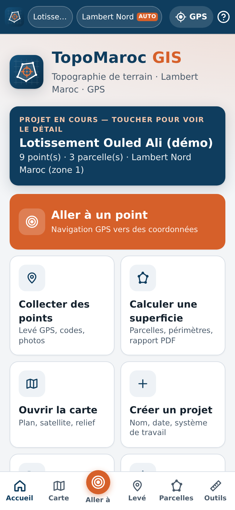
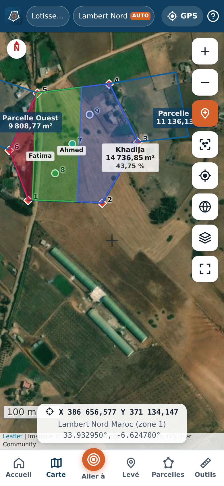
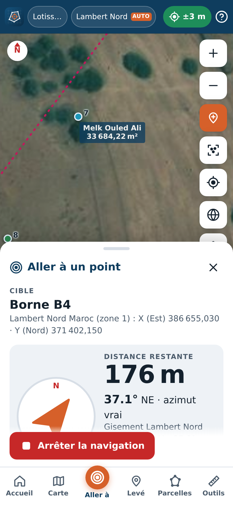
Sommaire
À propos des captures d’écranToutes les captures de ce manuel ont été prises automatiquement dans l’application publiée (version 1.4.0), sur un téléphone simulé de 390 × 844 points, avec un projet de démonstration fictif (« Lotissement Ouled Ali ») et une position GPS simulée près de Rabat. Les noms de personnes et de parcelles sont inventés.
1
Présentation et installation
TopoMaroc GIS est une application de topographie de terrain pour le Maroc. Elle fonctionne dans le navigateur d’un téléphone, d’une tablette ou d’un ordinateur, s’installe sur l’écran d’accueil et continue de fonctionner sans connexion.
Ce que permet l’application
Fonction
En bref
Systèmes de coordonnées
WGS 84, Lambert Nord / Sud / Sahara Nord / Sahara Sud (Merchich), Merchich géographique, UTM 28N / 29N / 30N. Choix automatique selon la zone où vous êtes.
Aller à un point
Navigation GPS vers des coordonnées : distance restante, azimut, gisement, cap magnétique, alerte d’arrivée.
Levé topographique
Points GPS, saisis ou placés sur la carte, avec code, description, photo, précision et altitude.
Parcelles et superficies
Par GPS, saisie, import ou dessin ; superficie plane (Gauss) et géodésique, périmètre, côtés, rapport PDF.
Partage entre personnes
Parts en % ou en fractions, propositions de découpage, lots colorés à superficie exacte, rapport de partage.
Relief et pente
Altitudes, dénivelé, pente moyenne et maximale, exposition, profil entre deux points (MNT ouvert).
Projets et couches
Plusieurs projets superposables, chaque parcelle affichable ou masquable.
Ouvrez https://milyasse.github.io/topomaroc-gis/ dans Chrome (Android) ou Safari (iPhone). L’adresse sécurisée (HTTPS) est indispensable : sans elle, le navigateur bloque le GPS.
Android : menu ⋮ → Installer l’application (ou Ajouter à l’écran d’accueil). iPhone : bouton Partager → Sur l’écran d’accueil.
Au premier usage du GPS, acceptez la demande de localisation. Pour une meilleure précision, activez la « position exacte » du téléphone.
Ouvrez l’application une fois avec une connexion : elle est ensuite disponible hors connexion (saisie, GPS, calculs, sauvegarde locale). Les fonds de carte et le MNT nécessitent une connexion.
Où sont mes données ?Projets, points, parcelles et photos sont enregistrés uniquement sur l’appareil (stockage du navigateur, IndexedDB). Rien n’est envoyé sur un serveur. Le navigateur peut effacer ces données s’il manque d’espace ou si vous videz les données du site : faites régulièrement une sauvegarde (chapitre 12).
PrécisionUn GPS de téléphone donne une position à quelques mètres près (typiquement 3 à 10 m à ciel ouvert). La valeur « ±x m » est celle annoncée par l’appareil. L’application ne remplace pas un levé GNSS professionnel ni un document cadastral officiel. Les calculs (transformations, superficies), eux, sont exacts et vérifiés par des tests automatisés.
2
Prise en main de l’interface
L’écran d’accueil
L’accueil donne accès aux actions principales :
Projet en cours : touchez la carte bleue pour ouvrir la fiche du projet (statistiques, parcelles, personnes).
Aller à un point (bouton orange) : navigation GPS vers des coordonnées.
Collecter des points, Calculer une superficie, Ouvrir la carte, Créer un projet, Reprendre un projet, Importer des données, Outils.
En bas : liens vers les Réglages, l’Aide et la page Version.
La barre du haut
Élément
Rôle
Logo
Retour à l’accueil.
Puce du projet
Nom du projet ouvert ; touchez-la pour voir sa fiche.
Puce du système
Système de coordonnées affiché (ex. « Lambert Nord »). Le badge AUTO indique le choix automatique selon votre zone (chapitre 4).
Fig. 1 — Écran d’accueil avec le projet de démonstration ouvert.
Carte, panneau et barre de navigation
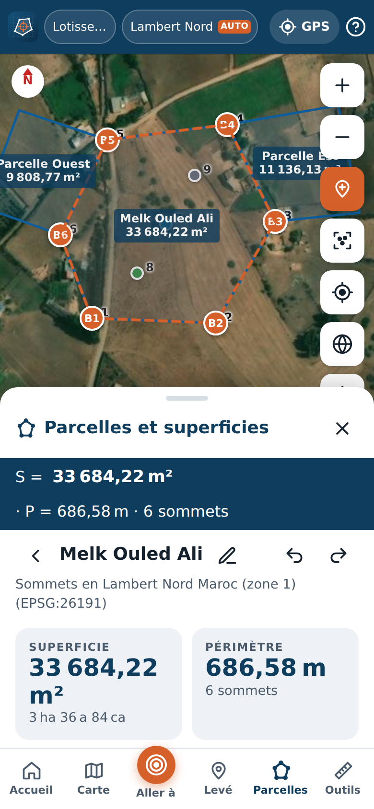
Fig. 2 — La carte en haut, le panneau d’un module en bas.
La carte occupe tout l’écran. Chaque module (Parcelles, Levé, Aller à…) s’ouvre dans un panneau en bas de l’écran :
faites glisser la poignée grise (ou touchez-la) pour réduire, ouvrir à moitié ou agrandir le panneau ;
la croix ✕ ferme le panneau et rend toute la carte visible.
La barre de navigation du bas donne accès en un geste à : Accueil, Carte, Aller à (bouton central), Levé, Parcelles, Outils.
Les boutons de carte (à droite) : zoom +/−, + Point (orange), sélection multiple, ma position (suivi GPS), emprise du projet, couches et plein écran.
En bas de la carte, la barre de coordonnées affiche la position du centre (ou du doigt) dans le système choisi, avec l’équivalent WGS 84 ; touchez-la pour copier.
Sur ordinateurLe panneau s’affiche à gauche et la carte à droite (chapitre 14). Raccourcis : Ctrl+Z annuler, Ctrl+Y rétablir.
3
La carte
La carte affiche vos points, parcelles et lignes sur un fond au choix. Elle reste en WGS 84 / Web Mercator ; les coordonnées sont converties à l’affichage dans le système choisi.
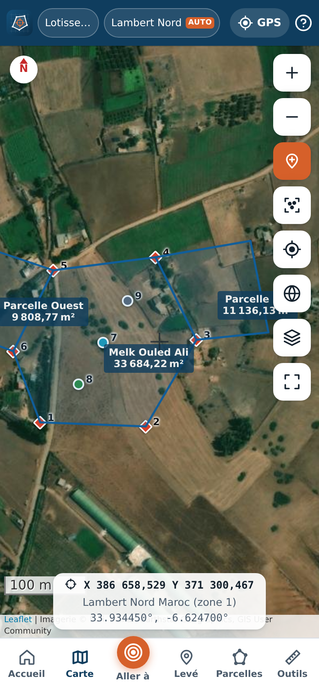
Fig. 3 — Fond satellite : bornes (losanges rouges), autres points, parcelles avec nom et superficie.
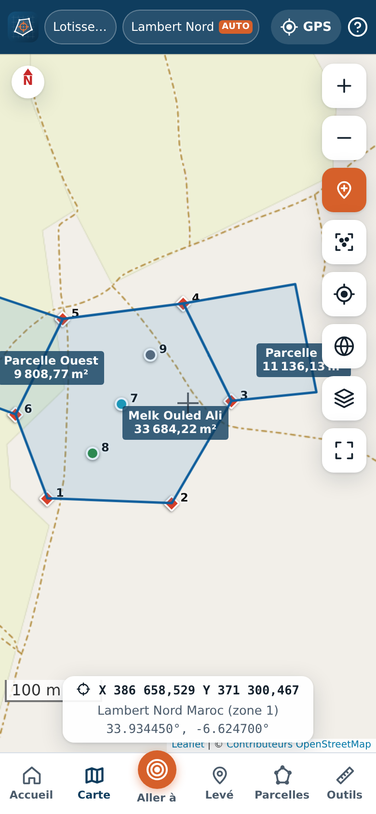
Fig. 4 — Fond plan (OpenStreetMap).
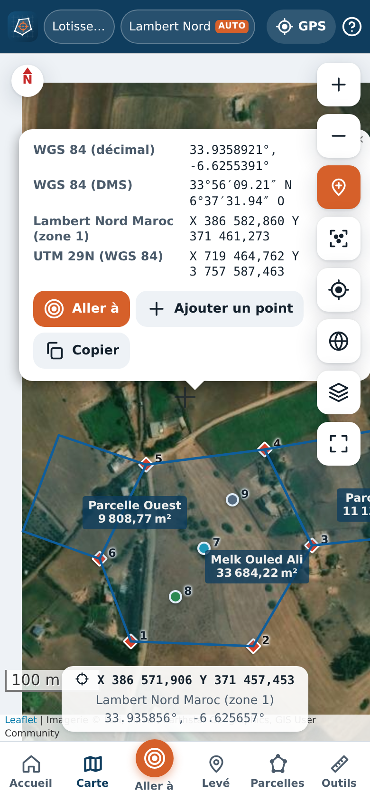
Fig. 5 — Toucher la carte : coordonnées du lieu dans tous les systèmes, avec Aller à, Ajouter un point et Copier.
Fonds de carte
Outils → Couches et fonds (ou bouton couches de la carte) : plan OpenStreetMap, satellite (Esri, Esri Clarity, Sentinel-2), relief, fond clair, sans fond (utile hors connexion), et fond personnalisé (adresse XYZ d’une orthophoto dont vous avez les droits).
Satellite à fort zoomL’imagerie satellite n’existe que jusqu’au zoom 18 environ en zone rurale (19 en ville). Au-delà, l’application agrandit automatiquement la meilleure image disponible au lieu d’afficher une zone grise, et un badge l’indique (« Imagerie max. ici : zoom 18 »).
Lire la carte
Points : couleur selon le code (borne en rouge, puits en bleu, arbre en vert…), numéro à côté ; la légende est dans Outils → Légende.
Parcelles : contour bleu, étiquette nom + superficie (masquée automatiquement si la parcelle est trop petite à l’écran) ; parcelle partagée en pointillés, lots colorés par personne.
Échelle en bas à gauche, nord en haut à gauche, attribution des fonds en bas à droite.
4
Systèmes de coordonnées et projection automatique
Depuis la version 1.3, le système de projection suit automatiquement la zone où vous travaillez.
Fonctionnement
La zone est déterminée par votre position GPS ; si le GPS est éteint, par le centre de la carte (à partir du zoom 9, la vue du pays entier est ignorée).
Quand vous changez de zone, le système d’affichage et le système de saisie basculent et un message l’indique.
Chaque point collecté (GPS, « + Point », point atteint, déplacement) est enregistré dans la zone de sa propre position.
Une marge d’environ 2 km évite les basculements répétés le long d’une limite.
Régler le choix
Touchez la puce du système (barre du haut) : cochez ou décochez Automatique selon ma zone de navigation et choisissez la famille Lambert Maroc ou UTM. Choisir un système à la main désactive le mode automatique. Les mêmes réglages sont dans Réglages → Systèmes de coordonnées, avec le bouton Recalculer dans leur zone pour les points anciens.
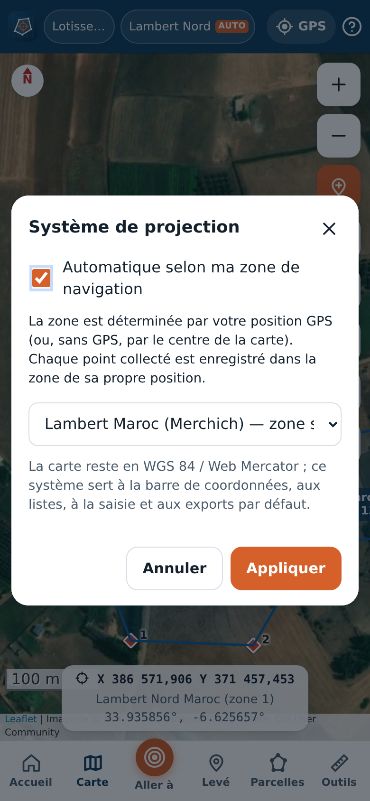
Fig. 6 — Choix du système de projection depuis la puce de la barre du haut.
Zones et systèmes
Système
EPSG
Zone d’usage
Ordre de saisie
Lambert Nord Maroc (zone 1)
26191
au nord de 31,5° N
X (Est) puis Y (Nord), m
Lambert Sud Maroc (zone 2)
26192
de 27,66° N à 31,5° N
X puis Y, m
Lambert Sahara Nord (zone 3)
26194
de 24,3° N à 27,66° N
X puis Y, m
Lambert Sahara Sud (zone 4)
26195
au sud de 24,3° N
X puis Y, m
UTM 28N / 29N / 30N (WGS 84)
32628–32630
fuseaux de 6° de longitude
E puis N, m
WGS 84
4326
GPS, monde
latitude puis longitude, degrés
Merchich géographique
4261
historique
latitude puis longitude, degrés
Limites tirées des domaines d’usage du registre EPSG. Paramètres des projections (registre EPSG, vérifiés avec PROJ 9.8) : Lambert conique conforme, ellipsoïde Clarke 1880 (IGN), méridien central −5,4°.
Saisie de coordonnées issues d’un documentLes valeurs X/Y des quatre zones Lambert se ressemblent : une erreur de zone ne se voit pas dans les chiffres. Lorsque vous tapez des coordonnées, vérifiez la zone proposée dans le formulaire ; l’application avertit si le point tombe à plus de 150 km de votre position GPS.
Transformation Merchich → WGS 84L’application utilise EPSG:1166 (exactitude ≈ 7 m), seule transformation publiée dans le registre EPSG pour le Maroc. Elle n’est pas définie pour les zones Sahara : l’application le signale. Des paramètres locaux officiels peuvent être saisis dans les Réglages, avec leur source.
5
Projets
Un projet regroupe les points, parcelles et lignes d’un chantier. Sans projet ouvert, un projet daté est créé automatiquement au premier enregistrement.
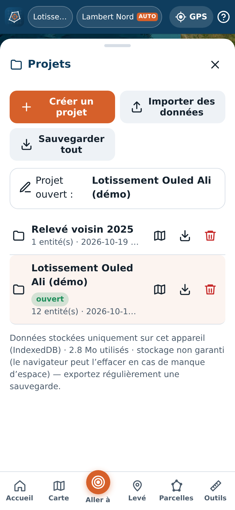
Fig. 7 — Liste des projets : créer, importer, sauvegarder, ouvrir, exporter, supprimer.
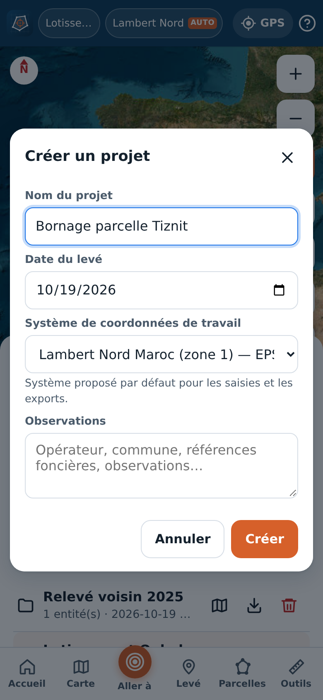
Fig. 8 — Création : nom, date du levé, système de travail, observations.
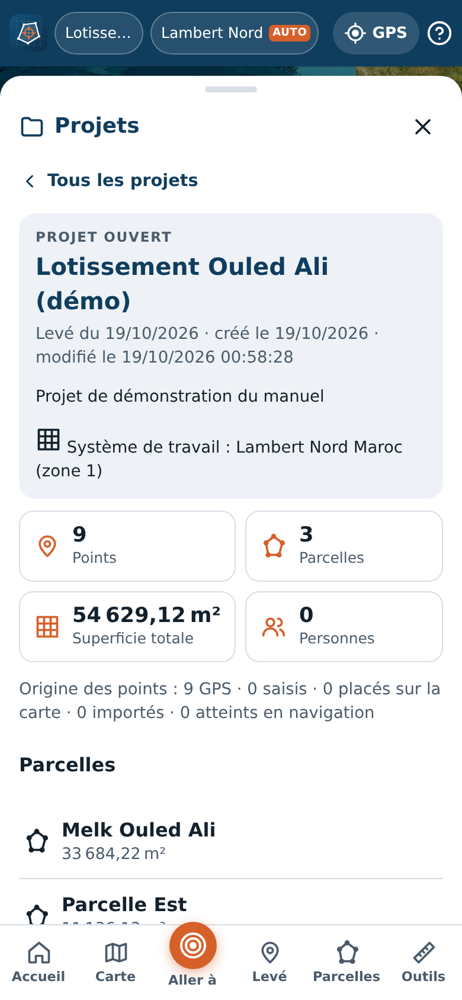
Fig. 9 — Fiche projet : nombre de points et de parcelles, superficie totale, personnes, origine des points.
Créer : Accueil → Créer un projet (ou Projets → Créer un projet), renseignez le nom, la date et le système de travail, puis Créer. Le projet est ouvert aussitôt.
Reprendre : Projets → touchez le nom d’un projet. Le projet ouvert porte l’étiquette « ouvert ».
Voir la fiche : touchez la puce du projet (barre du haut) ou la carte « Projet en cours » de l’accueil. La fiche liste les parcelles et la superficie par personne lorsque des parcelles sont partagées.
Sauvegarder : Sauvegarder tout enregistre un fichier JSON avec tous les projets et les photos (restauration sans écrasement via Importer des données).
Superposer plusieurs projets
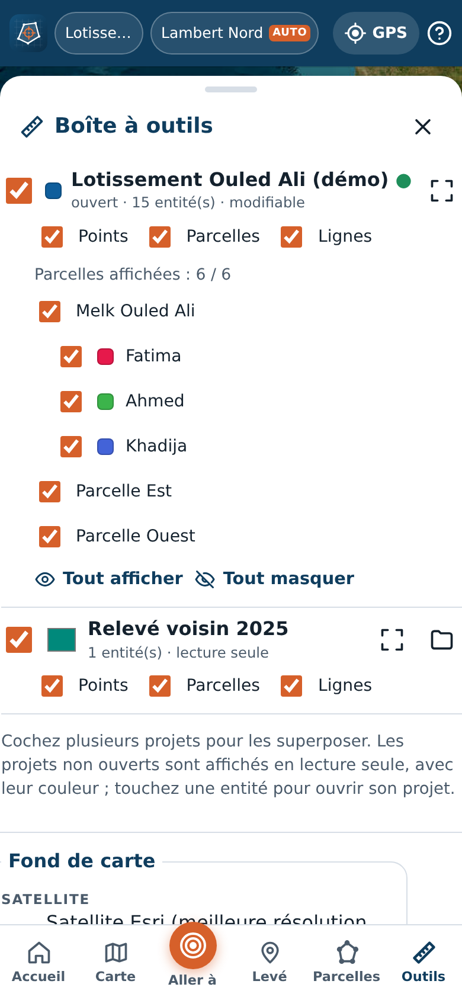
Fig. 10 — Outils → Couches : chaque projet a sa case, sa couleur et ses couches Points / Parcelles / Lignes.
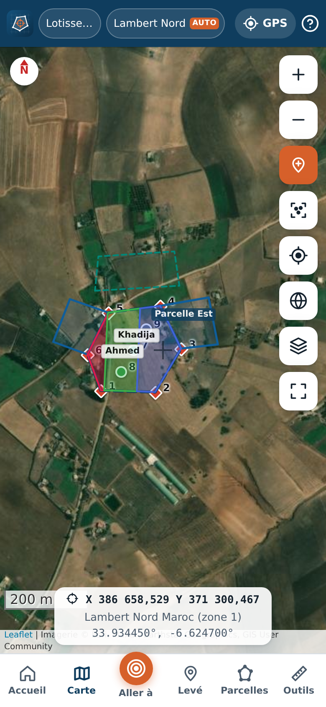
Fig. 11 — Le projet voisin (vert, pointillés) affiché en lecture seule sous le projet ouvert.
Cochez un autre projet pour l’afficher par-dessus le projet ouvert. Les projets non ouverts sont en lecture seule ; touchez une de leurs entités pour ouvrir le projet correspondant. Le bouton ⤢ cadre la carte sur le projet.
6
Aller à un point (navigation GPS)
Retrouvez sur le terrain un point dont vous connaissez les coordonnées (borne, sommet d’un plan) : l’application vous guide avec la distance et la direction.
Définir la cible
Touchez Aller à (bouton central de la barre du bas).
Choisissez le système de vos coordonnées, puis saisissez X (Est) et Y (Nord) — ou latitude et longitude en WGS 84. La virgule décimale est acceptée. L’équivalent WGS 84 s’affiche aussitôt pour contrôle.
Ou bien choisissez un point existant du projet, ou Pointer sur la carte.
Donnez un nom (facultatif) et choisissez le rayon d’alerte : 50, 20, 10, 5 m ou autre.
Touchez Démarrer la navigation.
Rayon et précisionSi la précision GPS est moins bonne que le rayon d’alerte, l’application le signale : l’alerte d’arrivée n’est alors pas fiable.
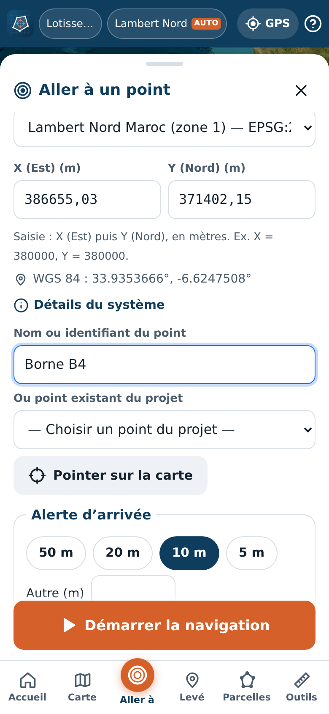
Fig. 12 — Saisie de la cible « Borne B4 » en Lambert Nord.
Fig. 13 — Navigation : distance restante, azimut vrai, gisement Lambert, flèche ; ligne vers la cible sur la carte.
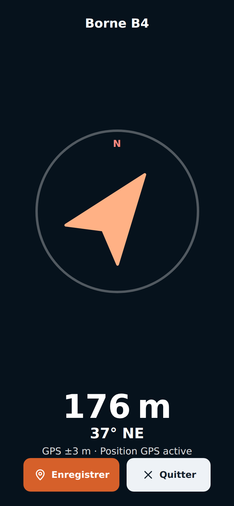
Fig. 14 — Plein écran simplifié : grande flèche et distance, lisibles en marchant.
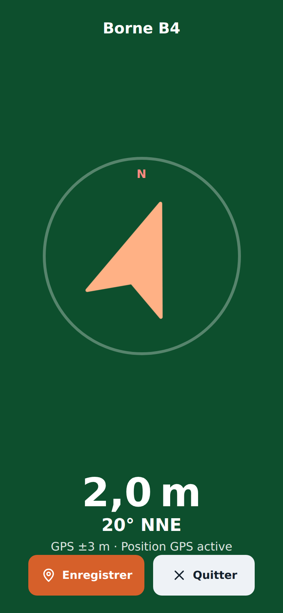
Fig. 15 — Arrivée dans le rayon : écran vert, son et vibration ; Enregistrer le point atteint.
Pendant la navigation
Distance restante (géodésique), azimut vrai, gisement dans le système de la cible et cap magnétique (déclinaison du modèle WMM 2025).
La flèche s’oriente avec la boussole du téléphone lorsqu’elle est disponible (marquée « indicative » si sa calibration est inconnue) ; sinon elle indique la direction par rapport au nord.
La précision GPS et l’heure de la dernière mesure sont rappelées ; l’écran reste allumé.
Enregistrer le point atteint ajoute au projet votre position à l’arrivée, avec l’écart restant ; Arrêter la navigation ou Quitter pour terminer.
7
Levé topographique
Collectez des points sur le terrain avec le GPS, en les saisissant ou en les plaçant sur la carte.
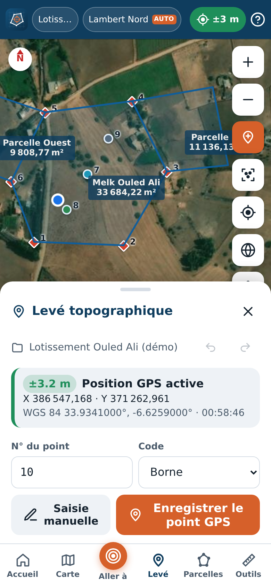
Fig. 16 — Carte GPS : précision, état, coordonnées dans le système actif et en WGS 84 ; numéro et code du prochain point.
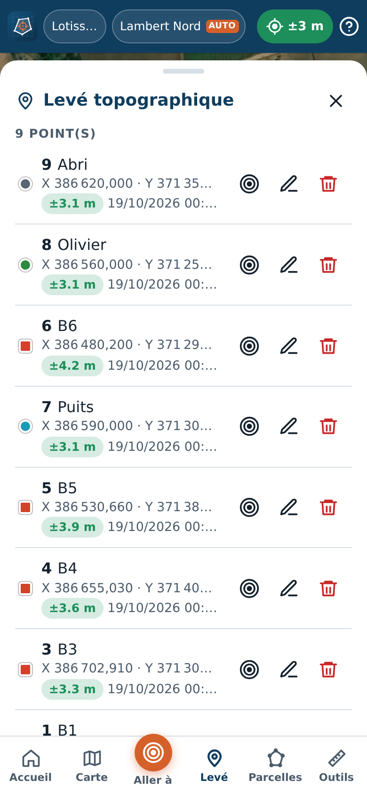
Fig. 17 — Liste des points : code, coordonnées, précision, date ; aller vers, modifier, supprimer.
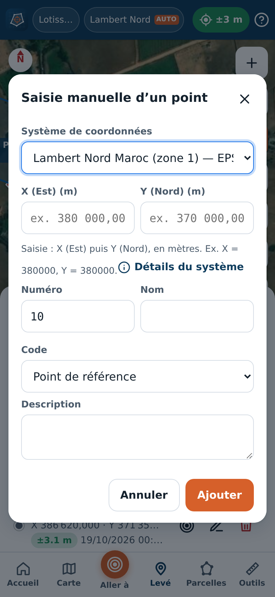
Fig. 18 — Saisie manuelle d’un point à partir de coordonnées connues.
Enregistrer un point GPS
Ouvrez Levé ; le GPS démarre. Attendez une précision correcte (pastille verte).
Placez-vous sur le point, vérifiez le numéro (incrémenté automatiquement), choisissez le code (borne, angle de parcelle, point de référence, bâtiment, arbre, route, limite, puits, poteau, clôture, divers) et ajoutez au besoin un nom, une description et une photo.
Touchez Enregistrer le point GPS. Le message confirme la précision et le système d’enregistrement.
Attendre une meilleure précisionCochez cette option pour moyenner les positions pendant une durée choisie (20 s par défaut) en ne retenant que celles dont la précision respecte le seuil. Cela réduit le bruit, pas les erreurs systématiques (arbres, murs, multitrajets).
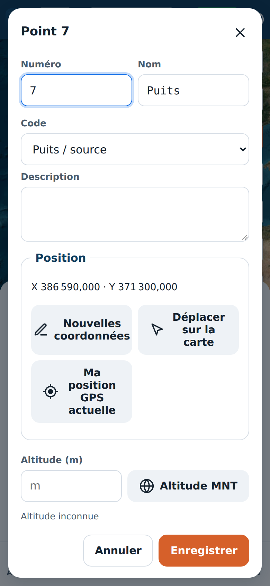
Fig. 19 — Fiche d’un point : identité, code, description, position et altitude.
Modifier ou déplacer un point
Touchez le crayon d’un point (dans la liste ou sur la carte). Vous pouvez changer son numéro, son nom, son code et sa description, ainsi que sa position :
Nouvelles coordonnées : saisie dans le système de votre choix ;
Déplacer sur la carte : faites glisser le point ou placez-le au réticule, puis Valider ;
Ma position GPS actuelle.
L’historique des positions est conservé. Si le point sert de sommet à une parcelle, l’application propose de déplacer aussi ce sommet, ce qui garde les limites communes exactes.
Altitude : saisie, GPS (indicative) ou Altitude MNT (modèle numérique de terrain, nécessite une connexion).
Annuler / rétablir : les flèches ↶ ↷ du module annulent la dernière opération (ajout, modification, suppression).
Ajouter des points sur la carte, sans GPS
Touchez le bouton orange + Point de la carte.
Choisissez le code, puis déplacez la carte sous le réticule et touchez Placer ici — ou touchez directement la carte à l’endroit voulu.
Enchaînez autant de points que nécessaire, puis Terminer.
La précision d’un point placé est celle de votre pointé sur l’image ; ces points sont marqués « placé sur la carte » dans la fiche projet.
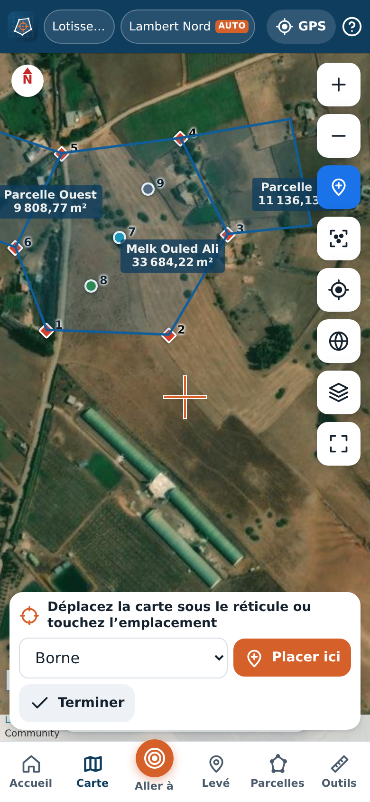
Fig. 20 — Mode « + Point » : réticule au centre et barre d’action.
8
Parcelles et superficies
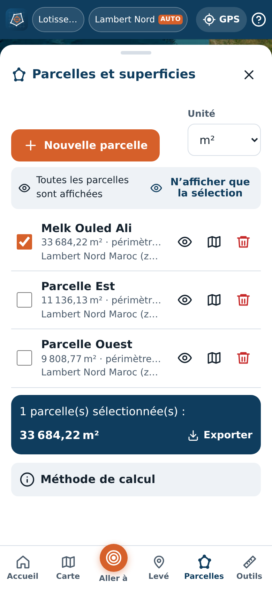
Fig. 21 — Liste des parcelles : superficie, périmètre, système ; total des parcelles cochées.
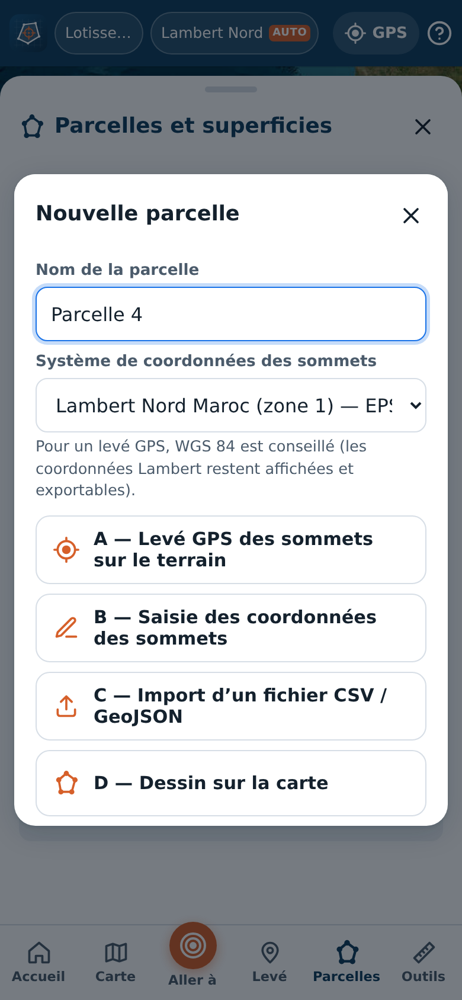
Fig. 22 — Nouvelle parcelle : nom, système des sommets et quatre modes de création.
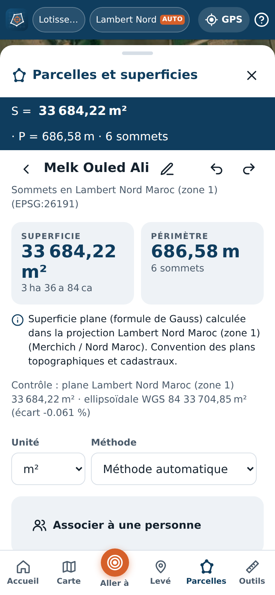
Fig. 23 — Résultats : superficie (m² et ha a ca), périmètre, méthode et contrôle.
Créer une parcelle
Mode
Comment
A — Levé GPS
Placez-vous sur chaque sommet et touchez Ajouter le sommet à ma position (moyenne possible). Les sommets sont enregistrés en WGS 84 ; les coordonnées Lambert sont calculées à l’affichage.
B — Saisie
Tableau des sommets : numéro, X, Y, description ; ajout, modification, suppression et réordonnancement.
C — Import
Fichier CSV, GeoJSON, KML ou GPX : choix des colonnes et du système (chapitre 12).
D — Dessin
Touchez la carte pour placer les sommets ; accrochage aux points et sommets existants ; fermeture en touchant le 1er sommet.
Une parcelle peut aussi être créée à partir de points déjà levés : bouton sélection de la carte, touchez les points (ou Visibles), puis Créer une parcelle — le contour est ordonné automatiquement, sans croisement. Ajouter à… insère les points sélectionnés dans une parcelle existante.
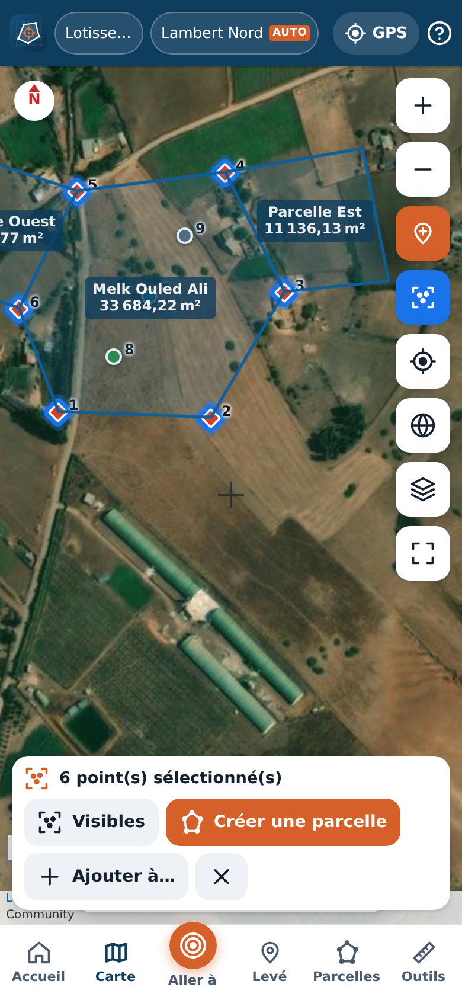
Fig. 24 — Sélection de 6 bornes (contour bleu) avant « Créer une parcelle ».
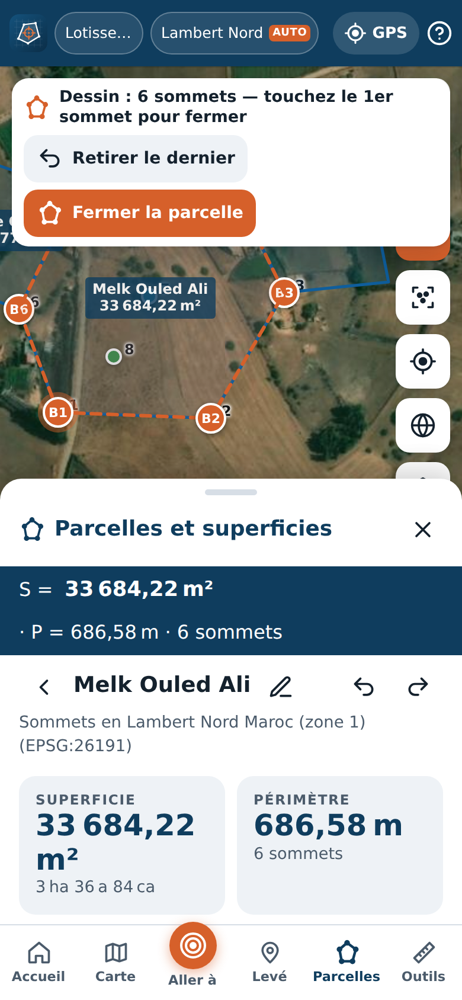
Fig. 25 — Onglet Dessin : barre flottante « Retirer le dernier » / « Fermer la parcelle ».
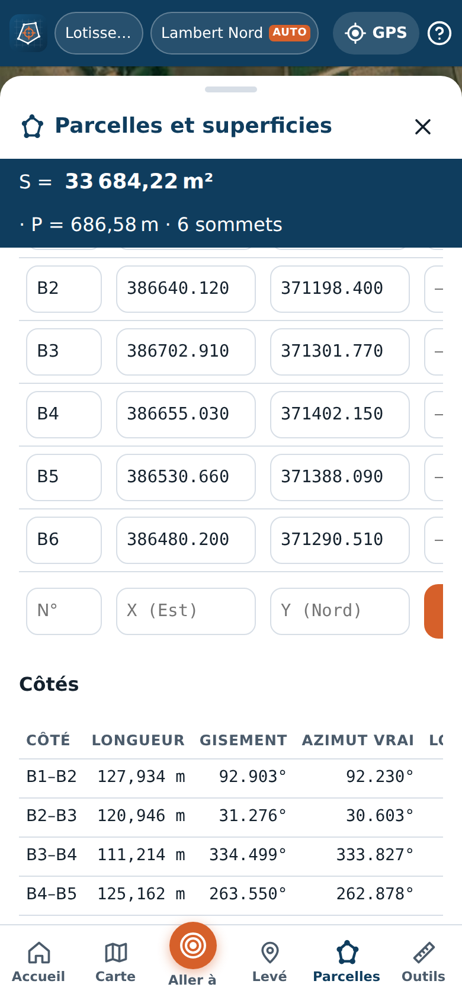
Fig. 26 — Tableau des sommets et des côtés : longueur, gisement, azimut vrai.
Résultats et méthode de calcul
Superficie en m², ares, hectares, km² ou format cadastral « ha a ca » (unité au choix), périmètre, nombre de sommets.
Coordonnées projetées (Lambert, UTM) : superficie plane par la formule de Gauss dans la projection — convention des plans topographiques et cadastraux.
Levé GPS (WGS 84) : superficie géodésique exacte sur l’ellipsoïde, avec contrôle plan dans la zone Lambert. Les deux valeurs et leur écart sont toujours affichés.
Contrôles : moins de 3 sommets, sommets en double, côtés qui se croisent, sommets alignés, précision GPS insuffisante pour un usage foncier, transformation extrapolée (zones Sahara).
Boutons de la fiche : Rapport PDF, Partager entre personnes, Exporter, Voir sur la carte, Afficher uniquement celle-ci, Masquer sur la carte, Supprimer. Le crayon à côté du nom renomme la parcelle ; ↶ ↷ annulent ou rétablissent.
Relief et pente
Dans la fiche d’une parcelle, la section Relief et pente calcule, à partir d’un modèle numérique de terrain ouvert (SRTM ~30 m, connexion nécessaire) :
altitudes minimale, maximale et moyenne, dénivelé ;
pente moyenne et maximale (en % et en degrés) et classe de pente ;
exposition (direction vers laquelle descend le terrain) et altitude de chaque sommet.
Précision du MNTAltitudes à ± 5 à 10 m environ : les pentes sont des tendances à l’échelle de la parcelle, pas des mesures topographiques.
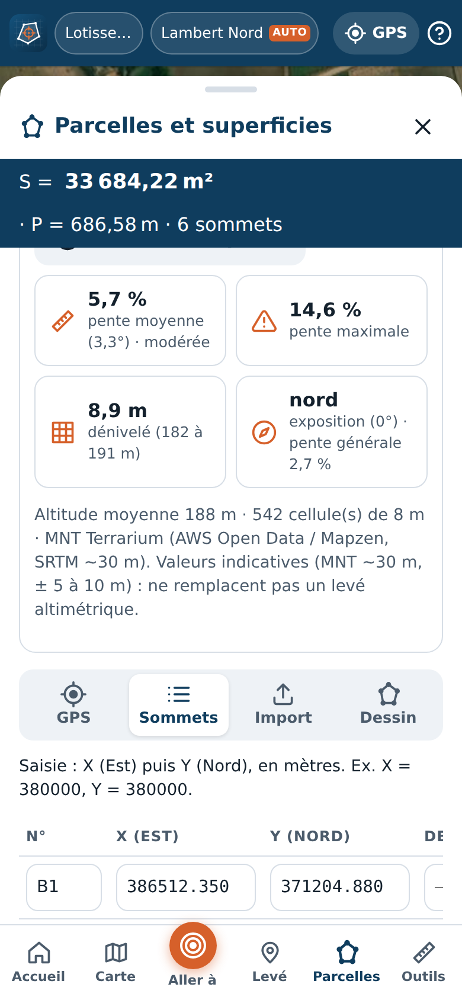
Fig. 27 — Relief et pente d’une parcelle.
9
Partage d’une parcelle entre personnes
Partagez une parcelle entre plusieurs personnes selon leurs parts : l’application propose des découpages et génère un lot par personne, avec sa superficie exacte et sa couleur.
Dans la fiche de la parcelle, touchez Partager entre personnes.
Saisissez le nom et la part de chaque personne : en pourcentage (25, 12,5) ou en fraction (1/8, 7/16). Parts égales répartit également. Le total doit faire 100 % (indicateur vert).
Facultatif : indiquez le côté d’accès (route, piste, canal) ; les propositions privilégient alors une façade pour chaque personne sur ce côté.
Touchez Proposer des découpages, choisissez une proposition (la meilleure est marquée ★) et ajustez au besoin l’orientation des limites avec le curseur.
Touchez Générer les parcelles : un lot est créé pour chaque personne. Rapport de partage (PDF) édite le document récapitulatif.
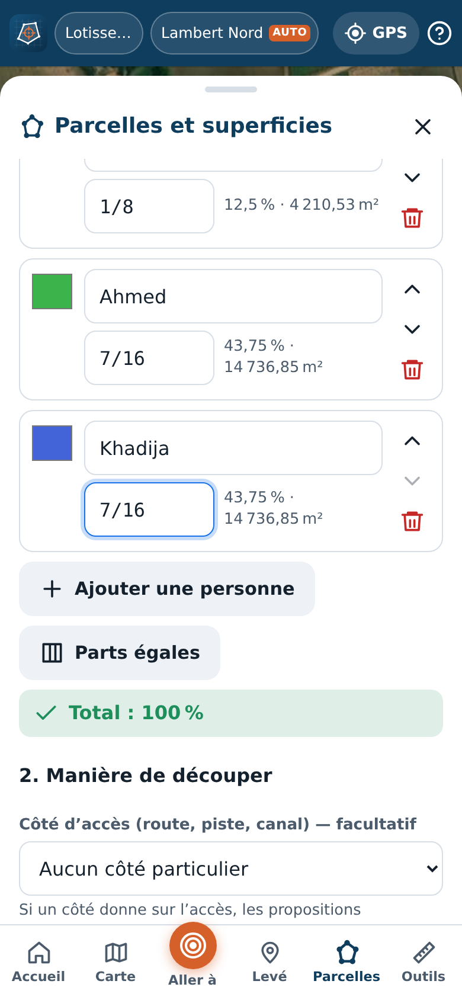
Fig. 28 — Personnes et parts (1/8, 7/16, 7/16) : superficie de chacune, total 100 %.
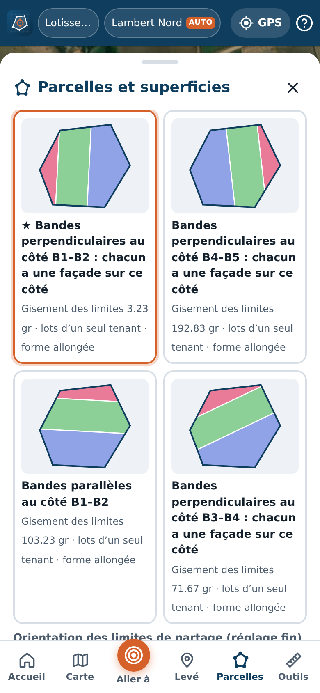
Fig. 29 — Propositions : bandes perpendiculaires ou parallèles à un côté, avec leurs caractéristiques.Fig. 30 — Lots générés sur la carte : couleur, nom, superficie et pourcentage de chaque personne.
Valeur du partageIl s’agit d’une proposition technique de découpage à superficie exacte (écart inférieur à 1 mm²). Un partage foncier ou successoral doit être validé par les intéressés et établi par un ingénieur géomètre-topographe ; il n’a pas de valeur juridique.
10
Afficher ou masquer des parcelles
Depuis la version 1.4, chaque parcelle s’affiche ou se masque sur la carte, comme une couche — par exemple pour ne montrer que la parcelle 1 d’un projet.
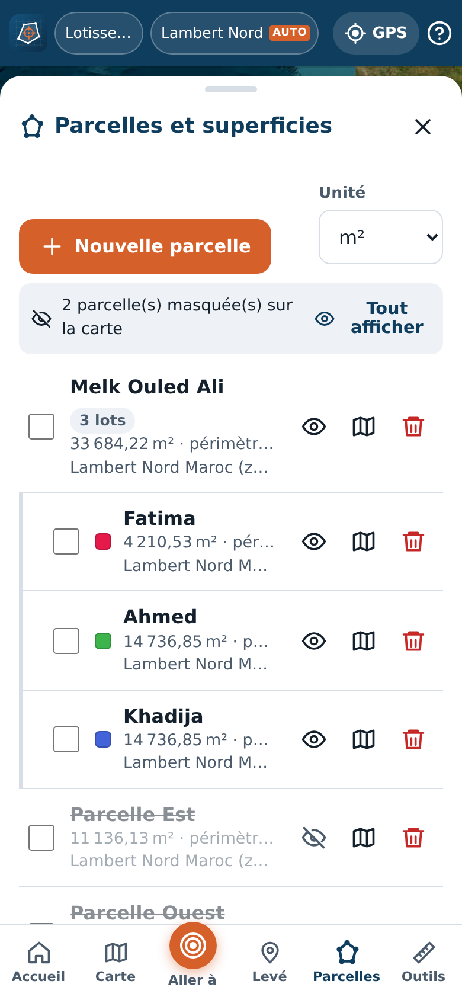
Fig. 31 — Après « Afficher uniquement celle-ci » : les autres parcelles sont barrées et masquées ; bandeau « Tout afficher ».
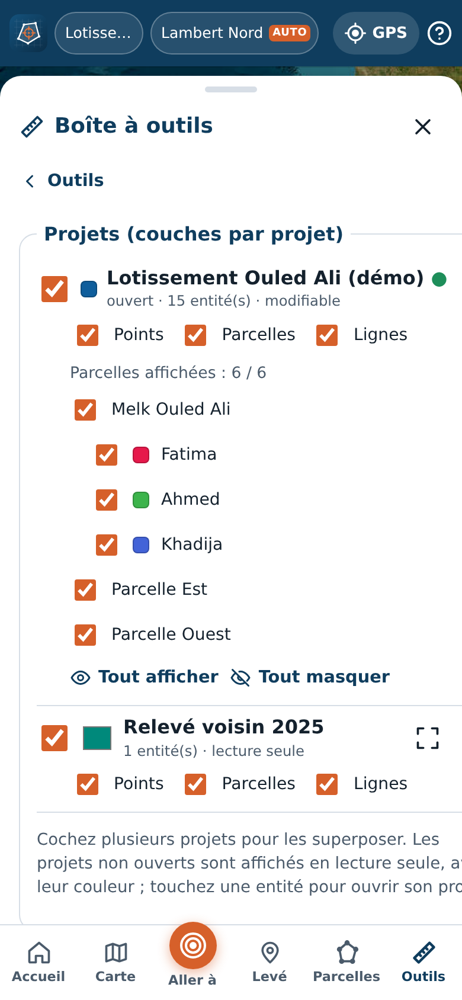
Fig. 32 — Outils → Couches : une case par parcelle et par lot, « Tout afficher » / « Tout masquer ».
Où
Action
Liste des parcelles
Bouton œil de chaque ligne ; bandeau « N parcelle(s) masquée(s) » avec Tout afficher ; avec des parcelles cochées : N’afficher que la sélection.
Fiche d’une parcelle
Afficher uniquement celle-ci, Masquer / Afficher sur la carte.
Bulle sur la carte
Seule et œil barré (masquer).
Outils → Couches
Cases à cocher sous le projet ouvert, Tout afficher, Tout masquer.
Masquer une parcelle partagée masque aussi ses lots.
Le choix est mémorisé et s’applique aussi quand le projet est superposé à un autre.
Le masquage ne concerne que la carte : listes, totaux, rapports et exports gardent toutes les parcelles.
11
Boîte à outils
Outil
Usage
Mesurer une distance
Touchez des points sur la carte : longueur géodésique de chaque segment et totale, azimut.
Mesurer une superficie
Polygone touché sur la carte : superficie et périmètre géodésiques ; Créer une parcelle à partir de la mesure.
Pente entre deux points
Deux points sur la carte : dénivelé, pente en % et en °, profil en long (MNT).
Convertir des coordonnées
Une coordonnée saisie convertie dans tous les systèmes.
Rechercher
Coordonnées ou nom de lieu (OpenStreetMap Nominatim).
Couches et fonds
Fonds de carte, couches, projets, parcelles (chapitres 3, 5 et 10).
Légende
Codes des points et symboles.
Historique des mesures
Mesures enregistrées.
Déclinaison magnétique
Déclinaison (WMM 2025) et convergence des méridiens en un lieu.
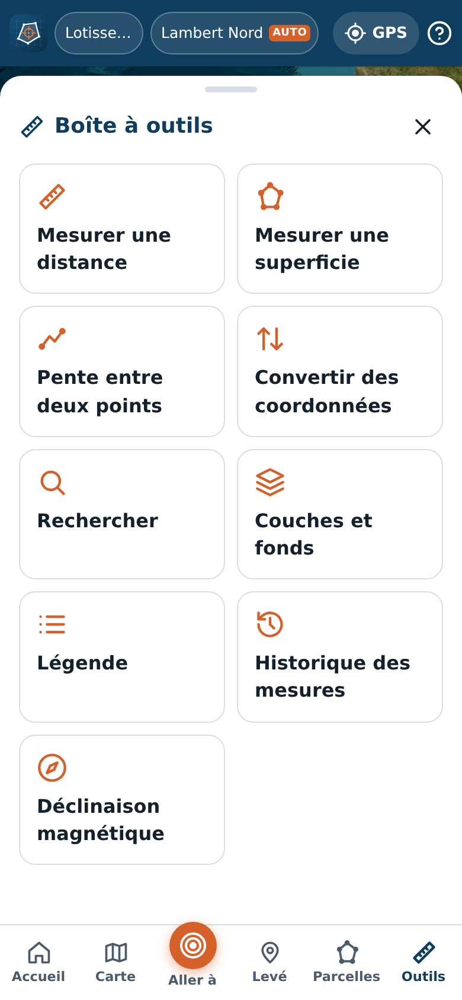
Fig. 33 — Menu de la boîte à outils.
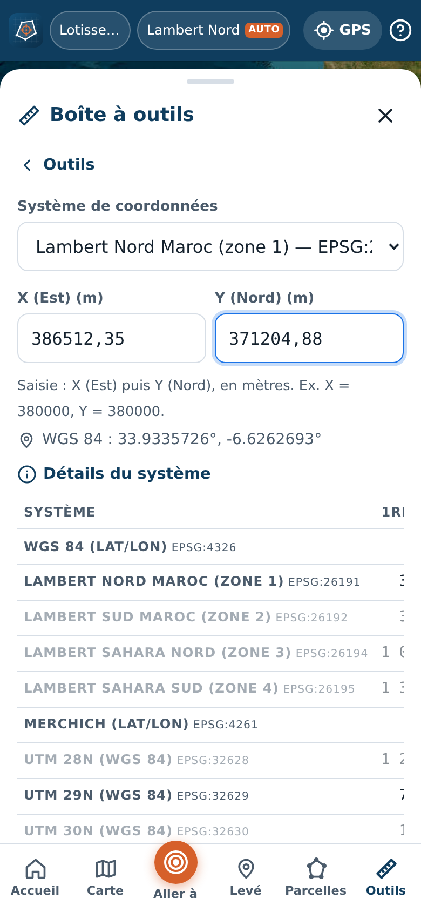
Fig. 34 — Convertisseur : une borne en Lambert Nord exprimée dans tous les systèmes.
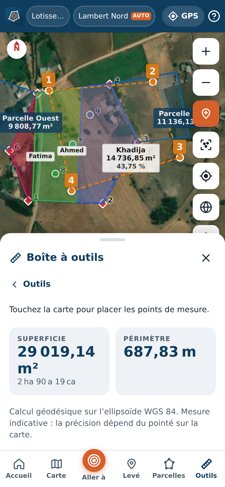
Fig. 35 — Mesure d’une superficie sur la carte.
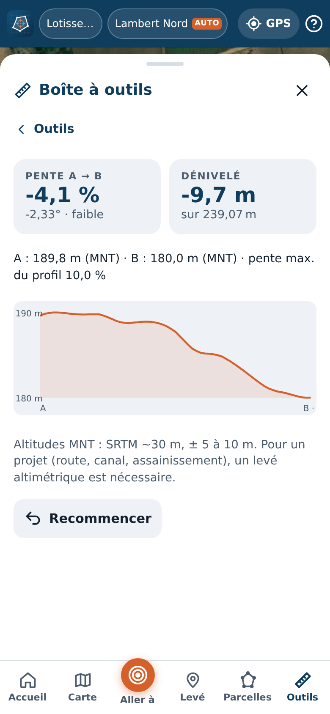
Fig. 36 — Pente entre deux points et profil en long.
12
Import, export et rapports PDF
Format
Import
Export
Remarques
CSV
oui
oui
séparateur ; , ou tabulation, virgule décimale, DMS ; système demandé à l’import ; fichier -SRC.txt joint à l’export
rapport de superficie, rapport de partage, fiche de levé
Sauvegarde JSON
oui
oui
un projet ou tous, photos incluses ; restauration sans écrasement
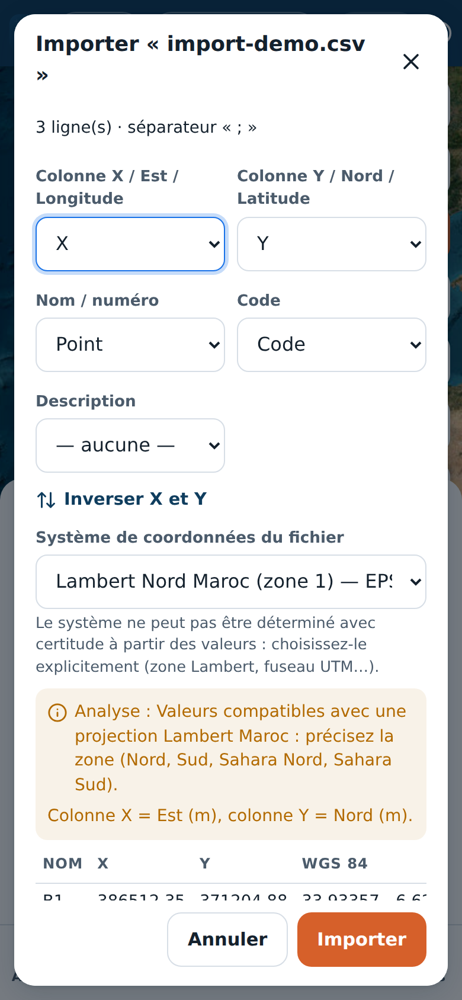
Fig. 37 — Import d’un CSV : colonnes X / Y / nom / code, système du fichier, analyse des valeurs et aperçu.
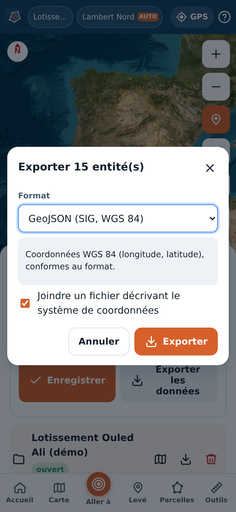
Fig. 38 — Export : choix du format et fichier décrivant le système de coordonnées.
Système d’un fichier importéUn fichier CSV ne dit pas dans quel système sont ses coordonnées. L’application analyse les valeurs et propose les systèmes compatibles, mais c’est à vous de confirmer la bonne zone Lambert.
Rapports PDF
Le rapport de parcelle (fiche de la parcelle → Rapport PDF) contient le projet, la date, un plan coté avec échelle graphique et nord, le tableau des sommets (Lambert et WGS 84), le tableau des côtés, la superficie et le périmètre, le système, la méthode, la qualité estimée, le relief si calculé, et la mention « ne constitue pas un document cadastral officiel ». Le rapport de partage ajoute les personnes, leurs parts, leurs lots et leurs superficies.
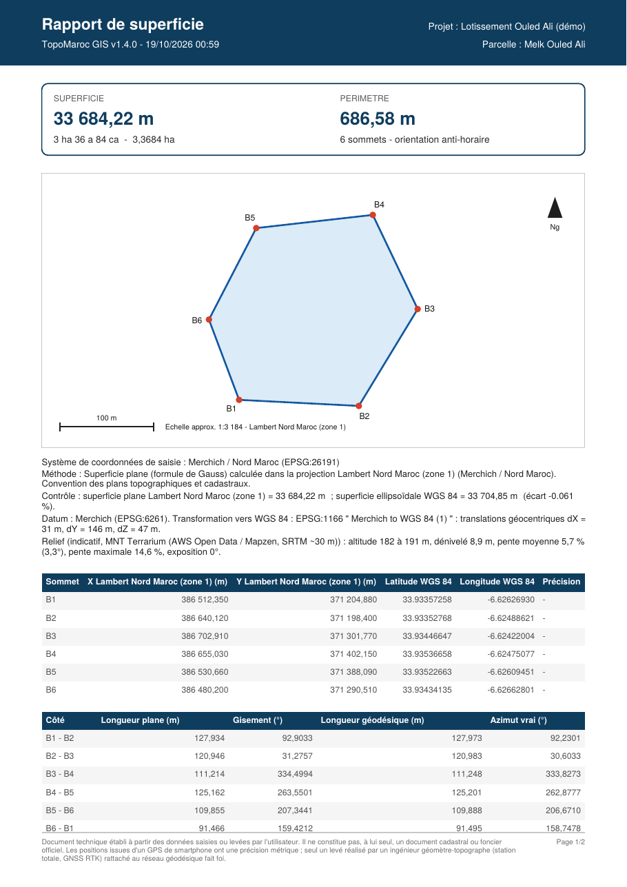
Fig. 39 — Rapport de parcelle (1re page), projet de démonstration.
Affichage : thème automatique, clair ou sombre ; contraste renforcé pour le plein soleil ; langue (français ; l’arabe est prévu).
Systèmes de coordonnées : projection automatique, famille Lambert ou UTM, système de saisie et d’affichage, recalcul des points anciens dans leur zone.
Unités : angles en degrés décimaux, grades (usage topographique) ou degrés-minutes-secondes ; superficies en m², a, ha, km² ou ha a ca.
Transformation Merchich → WGS 84 : EPSG:1166 par défaut ; paramètres locaux à 3 ou 7 paramètres si vous disposez de valeurs officielles (avec leur source).
Stockage : espace utilisé, demande de stockage persistant, version de l’application.
Connaître la version et mettre à jour
La page Version de l’application s’ouvre depuis le lien « Version 1.4.0 » en bas de l’accueil, depuis les Réglages ou depuis l’Aide. Elle indique le numéro et la date de la version, le numéro de publication (code source sur GitHub), le mode (application installée ou navigateur), l’état du fonctionnement hors connexion, l’espace utilisé et l’historique complet des versions. Le bouton Rechercher une mise à jour compare avec la version en ligne ; lorsqu’une nouvelle version est prête, une bande « Une nouvelle version est disponible » propose Mettre à jour. La mise à jour n’interrompt jamais une saisie en cours sans votre accord.
14
Tablette, ordinateur et mode sombre
Sur un écran large, le panneau des modules s’affiche à gauche et la carte occupe le reste de l’écran ; toutes les fonctions sont identiques.
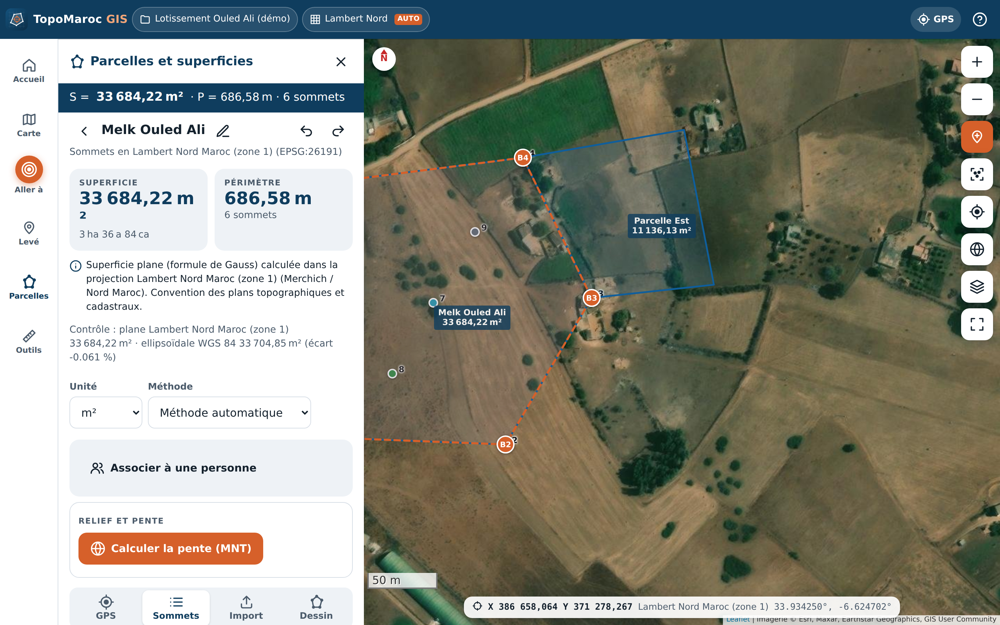
Fig. 44 — Fiche d’une parcelle sur un ordinateur (1440 × 900).
Mode sombre
Le thème suit par défaut celui du téléphone (Réglages → Thème pour le forcer). Le mode sombre économise la batterie des écrans OLED et reste lisible la nuit ; en plein soleil, préférez le thème clair avec le contraste renforcé.
Les animations de l’interface sont désactivées automatiquement si le téléphone demande de « réduire les animations ».
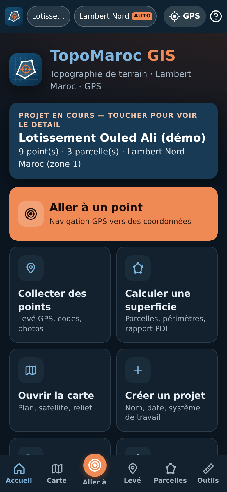
Fig. 45 — Accueil, thème sombre.
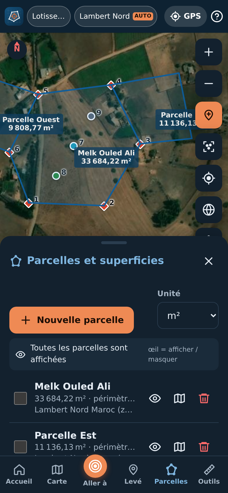
Fig. 46 — Parcelles, thème sombre.
15
Bonnes pratiques et limites
Sur le terrain
Ouvrez l’application avec une connexion avant de partir, et affichez une fois la zone de travail : l’application et les fonds consultés restent disponibles hors connexion.
Attendez une pastille GPS verte ; restez à ciel ouvert, loin des murs et des arbres ; utilisez « Attendre une meilleure précision » pour les bornes.
Vérifiez la zone de projection affichée (puce de la barre du haut) avant de saisir des coordonnées d’un document.
Prenez une photo des bornes et notez une description : elles figurent dans les exports.
Données
Les données restent sur l’appareil : sauvegardez régulièrement (Projets → Sauvegarder tout) et conservez le fichier ailleurs.
Pour passer d’un appareil à un autre : sauvegarde sur le premier, Importer des données → restauration sur le second.
Limites connues
Précision GPS de téléphone : métrique, non cadastrale. Pas de correction RTK.
Transformation Merchich → WGS 84 publique à ≈ 7 m près et non définie dans les zones Sahara.
Fonds de carte, recherche de lieux et MNT nécessitent une connexion ; l’imagerie satellite s’arrête vers le zoom 18 en zone rurale.
MNT ~30 m : altitudes et pentes indicatives.
Partage de parcelles : proposition technique sans valeur juridique.
Questions fréquentes
Question
Réponse
Le GPS reste sur « … » ou « ! »
Vérifiez que la localisation est autorisée pour le navigateur et que l’adresse commence par https. À l’intérieur d’un bâtiment, sortez à découvert.
Le système affiché a changé tout seul
C’est la projection automatique (chapitre 4) : vous êtes entré dans une autre zone. Touchez la puce pour la désactiver si besoin.
La carte est grise à fort zoom
Imagerie absente à ce niveau : l’application agrandit la meilleure image ; sinon changez de fond ou dézoomez.
Une parcelle a disparu de la carte
Elle est peut-être masquée : Parcelles → Tout afficher.
Quelle version ai-je ?
Lien « Version » en bas de l’accueil (chapitre 13).